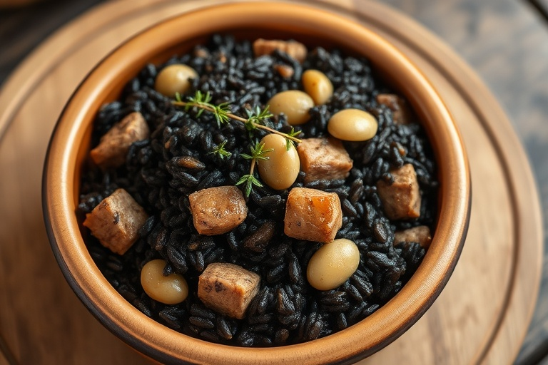
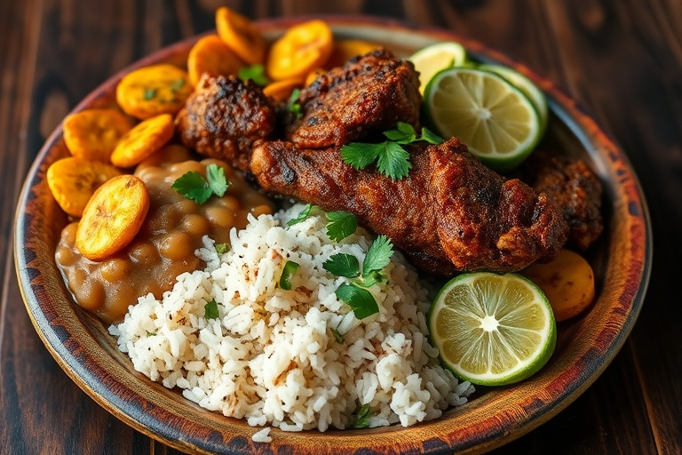
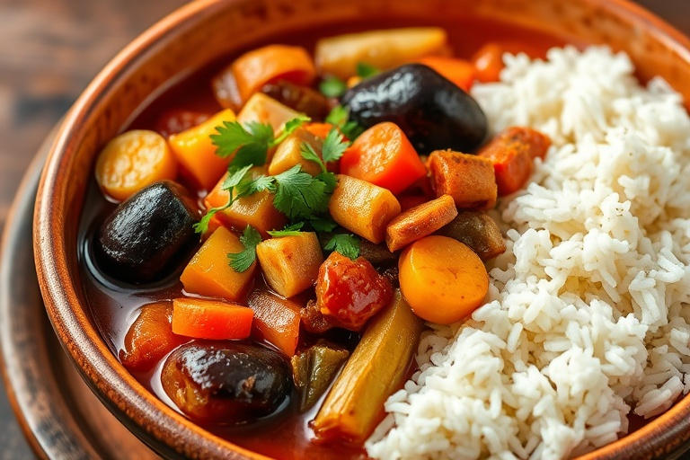
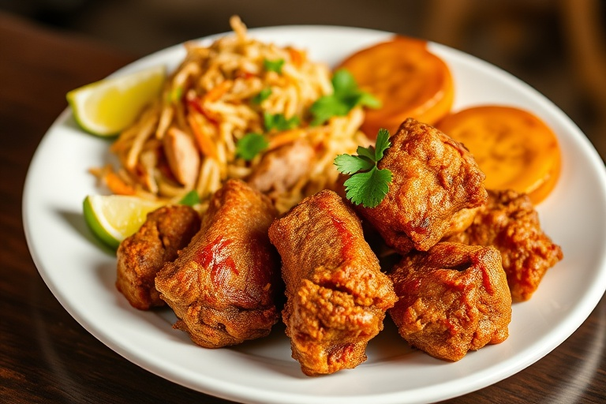
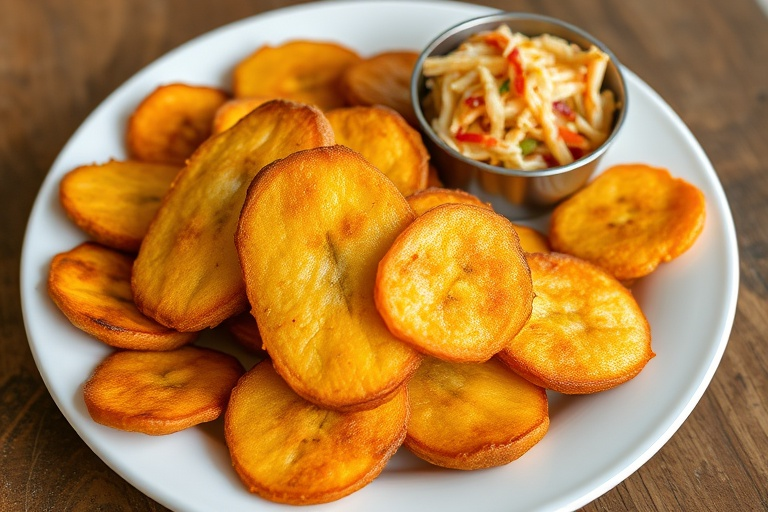

Un voyage culinaire à travers les saveurs authentiques et l'héritage
gastronomique d'Haïti, où chaque plat raconte une histoire.
Decouvrez les saveurs authentiques qui font la renommee de la cuisine
haitienne a travers le monde. Chaque plat est prepare avec des ingredients
frais et des techniques Traditionnelles
Soupe à la citrouille servie traditionnellement le jour de l'An pour célébrer l'indépendance d'Haïti. Riche en légumes et viandes.
voir recette

Riz noir aux champignons djon djon, accompagné de haricots lima et de viande. Un plat emblématique de la cuisine haïtienne.
voir recette

Viande de cabri ou de bœuf marinée dans des agrumes et des épices, puis frite jusqu'à ce qu'elle soit croustillante.
voir recette

Ragoût de légumes épais composé d'aubergines, de choux, de carottes et d'autres légumes, servi avec du riz blanc.
voir recette

Morceaux de porc marinés et frits à la perfection, servis avec du pikliz (condiment épicé) et des bananes
plantains
voir recette

Bananes plantains écrasées et frites deux fois, servies traditionnellement avec du pikliz. Un accompagnement incontournable.
voir recette